St. Joseph’s College (Autonomous)
Tiruchirappalli – 620 002 • Accredited at A++ Grade (Cycle IV) by NAAC • College with Potential for Excellence
Academic Year 2026–2027 (Even Semester: Semesters II, IV & VI)
1 Portal Access & Unified Role-Based Sign In
Access the portal directly from any web browser on desktop, tablet, or mobile phone via: https://sjciqac.frontierwox.in/course-plan/.
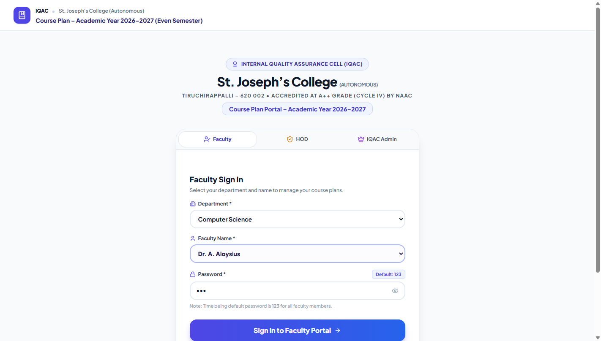
Figure 1.1: Institutional Login Portal with single-point faculty authentication.
How Faculty and Heads of Departments (HODs) Sign In:
- Select the Faculty tab.
- Choose your academic Department from the dropdown list (e.g., Computer Science, Chemistry, Mathematics).
- Select your Name from the official faculty registry list.
- Click Sign In as Faculty Member.
2 Faculty Dashboard & 2-Step Completion Lifecycle
The dashboard serves as your academic workspace to track your course plans, create new plans, view submission statuses, and access departmental monitoring if you are an HOD.
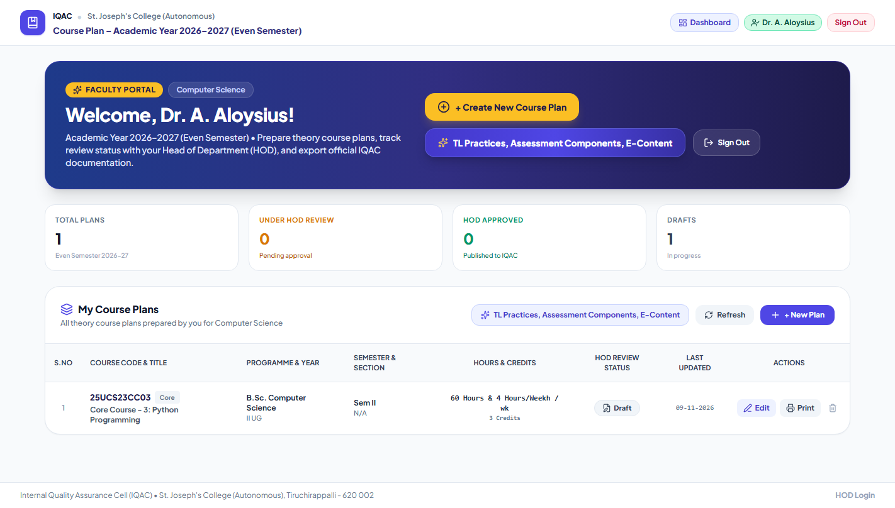
Figure 2.1: Faculty Dashboard with Course Plans repository and action buttons.
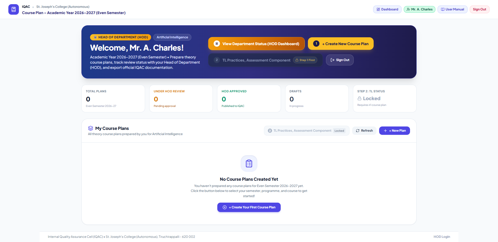
Figure 2.2: Prominent "🏛️ View Department Status (HOD Dashboard)" toggle displayed for recognized HODs.
Course Plan Preparation
Click `+ Create New Course Plan` to enter the 4-part guided planner for your assigned theory or practical course.
TL Practices, Assessment & E-Content
Click `TL Practices, Assessment Components, E-Content` to submit your institutional pedagogical summary. Automatically unlocks once at least 1 course plan is initiated.
Course Plan Status Indicators:
3 Part-I: Course Information & Multi-Faculty Course Sharing
Part-I captures course metadata, credits, hours, and Course Outcomes (CO1 to CO6). You do not need to type course titles, credits, or outcomes manually—everything auto-fetches directly from the verified syllabus repository!
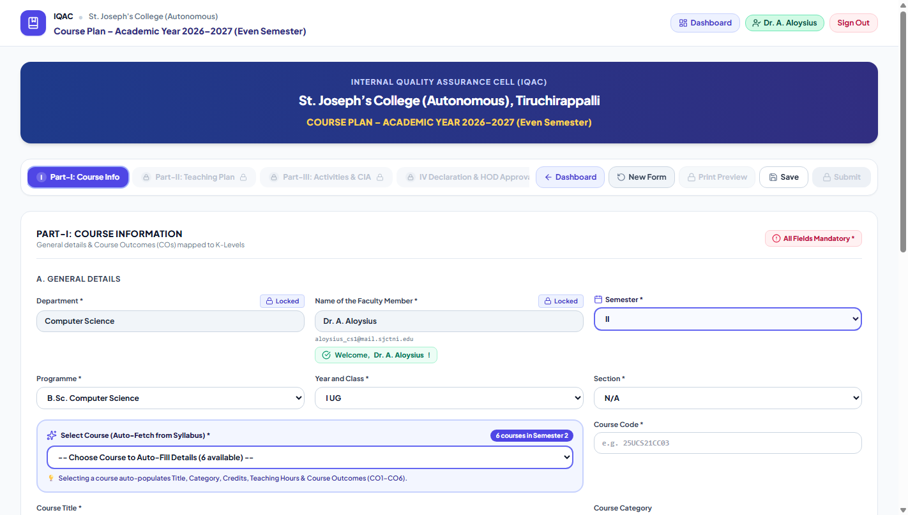
Figure 3.1: Academic Programme, Class, Section, and Syllabus Course selection.
Collaborative Course Handling: Multi-Faculty Sharing
When a course is taught jointly by more than one instructor (e.g., divided across units or shared practical batches), use the Collaborative Course Handling feature:
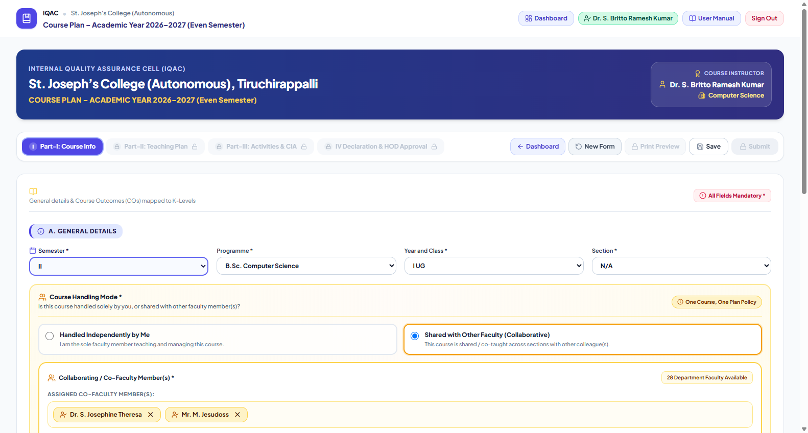
Figure 3.2: Multi-faculty chip badges showing participating instructors with easy "+ Add Co-Faculty" picker.
How to Configure a Shared Course:
- In Course Handling Mode, select Shared with Other Faculty (Collaborative).
- The Co-Faculty Selection section appears with your department’s faculty dropdown.
- Select your colleague's name from the dropdown and click + Add Co-Faculty.
- You can add multiple co-faculty members (2, 3, or more). Each teacher appears as an interactive chip tag with a remove (
×) icon. - Automated Downstream Impact:
- In Part-II (Unit Completion Plan), a Handled by dropdown is enabled for each Unit (I to V) to assign specific units to specific instructors.
- In Part-III (CIA Assessments), an Assessed by field allows designating which teacher evaluates each assessment component.
- In Official Print Preview, all handling faculty members are listed in the course header and provided dedicated signature lines alongside the HOD.
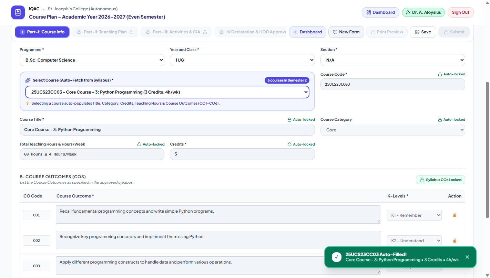
Figure 3.3: Automatic auto-fill of Course Outcomes (CO1–CO6) with Bloom's Taxonomy Cognitive K-Levels.
4 Part-II: Detailed Teaching Plan & Unit Completion Plan
Part-II outlines the day-by-day and month-by-month instructional delivery. It consists of two seamlessly interconnected sections: A. Detailed Teaching Plan and B. Unit Completion Plan.
Syllabus Topic Picker: Instant FROM – TO Insertion
Faculty no longer need to manually re-type syllabus topics! The streamlined syllabus popup enables selecting start and end topics directly:
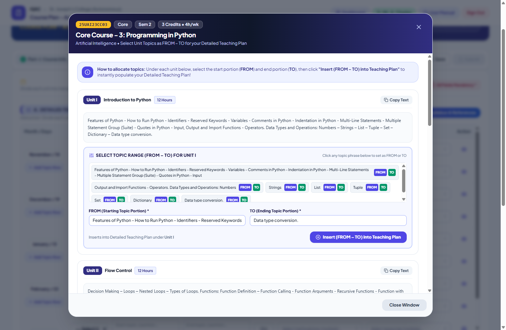
Figure 4.1: Interactive Syllabus unit modal with FROM topic and TO topic dropdown selection.
Simply open the syllabus modal, pick the unit, select your starting topic in FROM Topic and finishing topic in TO Topic, and click Apply to Row to instantly populate the teaching schedule.
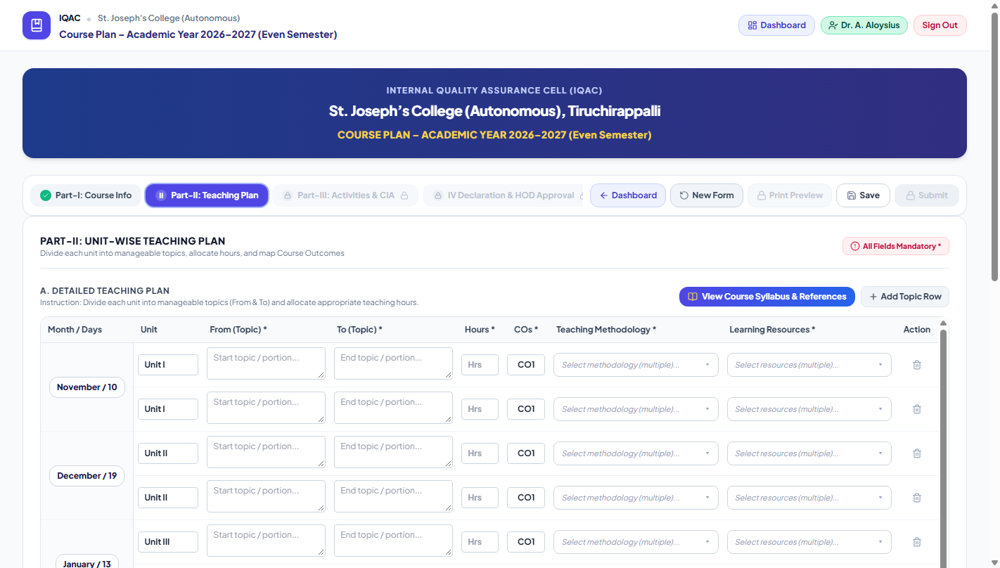
Figure 4.2: Detailed Teaching Plan with Month, Working Days, Topics, Hours, and Pedagogy.
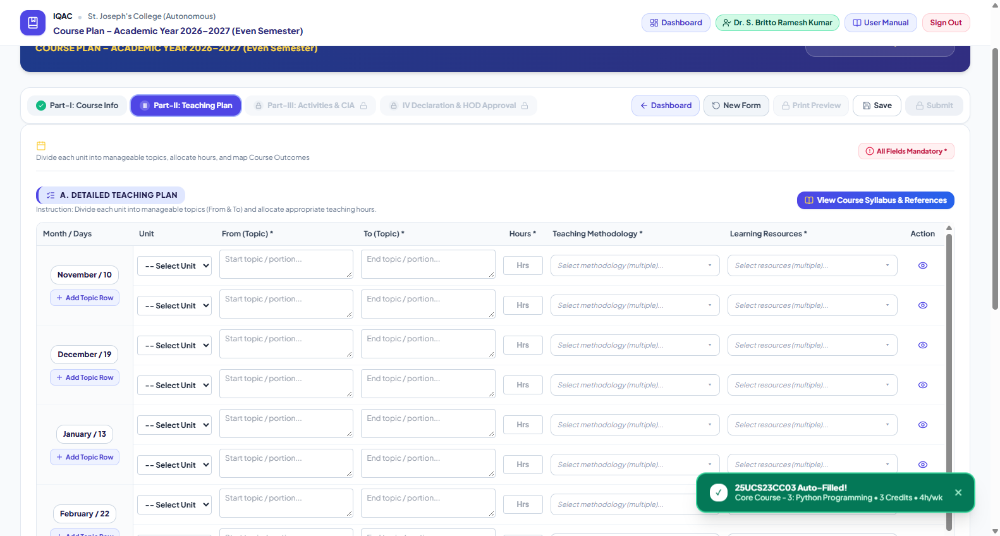
Figure 4.3: Unit Completion Plan displaying "Handled by" faculty dropdowns and auto-synchronized Planned Hours.
Key Teaching Plan Features & Quality Safeguards:
- Clean Hours Input: Spinner stepper arrows have been removed to prevent accidental scrolling changes while typing.
- Month-wise Visual Grouping: Distinct borders separate teaching blocks across November, December, January, February, and March.
- Auto-Synced Planned Hours: In Section B, the Planned Hours column automatically calculates the exact sum of hours allocated in Section A for each unit. Editing in Section B is locked to eliminate numerical discrepancies.
- Collaborative Unit Assignment: In shared courses, assign Unit I through Unit V to the appropriate instructor using the Handled by dropdown.
5 Part-III: Learning Activities, Assessment Plan & ICT Integration
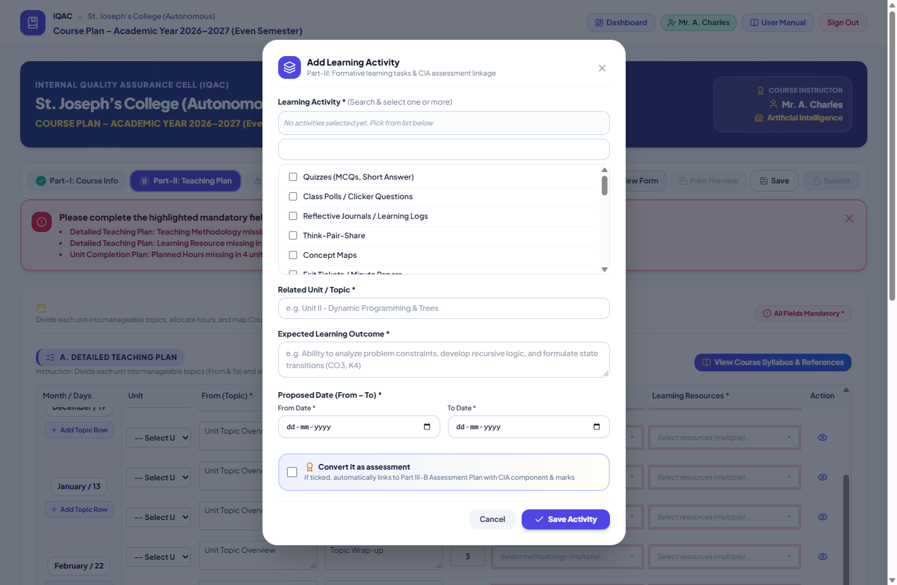
Figure 5.1: Streamlined "Add Learning Activity" popup modal with single-allocation component locking.
A. Student-Centric Learning Activities:
Plan innovative pedagogical activities (Experiential Learning, Participatory Learning, Problem Solving). The modal automatically locks once a component is allocated, preventing duplicate mark entries.
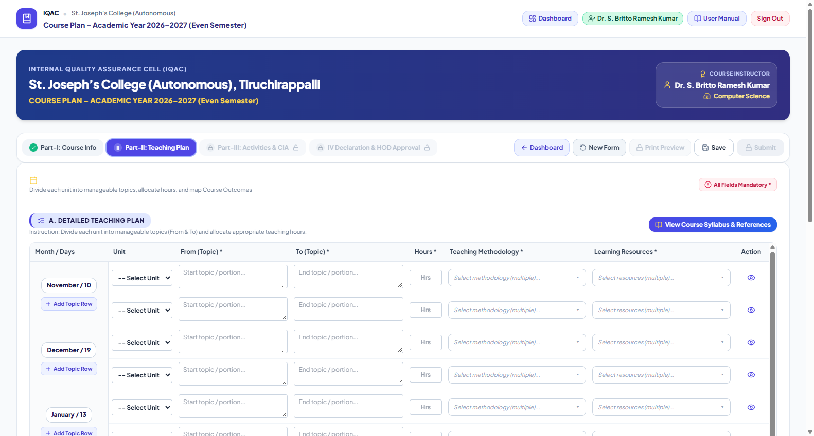
Figure 5.2: CIA Assessment schedule with "Assessed by" dropdown and ICT Tools with JosTEL platform default.
B. CIA Assessment Plan
- C1 JosTEL MCQ: Locked at official marks (UG: 5m, PG: 7.5m).
- Mid Sem Test: Written test (UG: 10m, PG: 15m).
- C2 Component: Flexible assignment/model (UG: 6m, PG: 7.5m).
- Library Referencing: (UG: 4m).
- Assessed By: In collaborative courses, select the responsible evaluator for each component.
C. Digital Resources & ICT Integration
- Mandatory: Minimum 1 row is required.
- ICT Tool: Select PPT, LMS, Online Quizzes, Simulation, etc.
- Platform: JosTEL is selected by default.
- Other Platforms: Selecting "Others" instantly opens a custom text field to specify Google Classroom, Canvas, Coursera, etc.
6 Part-IV: Declaration & Submission Workflow
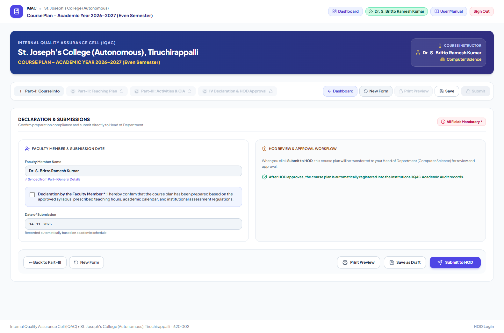
Figure 6.1: Compliance check declaration and single-click "Submit to HOD" action.
Submission Workflow & Automatic Editing Lock:
- Intelligent Form Validation: If any mandatory field or minimum row requirement is missed across any tab, an error notification is displayed at the top, and the window smoothly scrolls to top to highlight the exact issue.
- Compliance Affirmation: Review the compliance declaration affirming adherence to the approved syllabus, pedagogical policies, and institutional evaluation schedules.
- Check the confirmation box: Click "I hereby declare that this course plan has been prepared in accordance with the syllabus..."
- Click `Submit to HOD`: Once submitted, your course plan status changes to Submitted to HOD.
- Lock on Submission: To ensure data integrity during departmental review, submitted plans are locked from editing on your dashboard. If changes are necessary, your HOD can return the plan with feedback notes, which automatically re-enables editing.
7 Official IQAC Print Preview & Collaborative Signatures
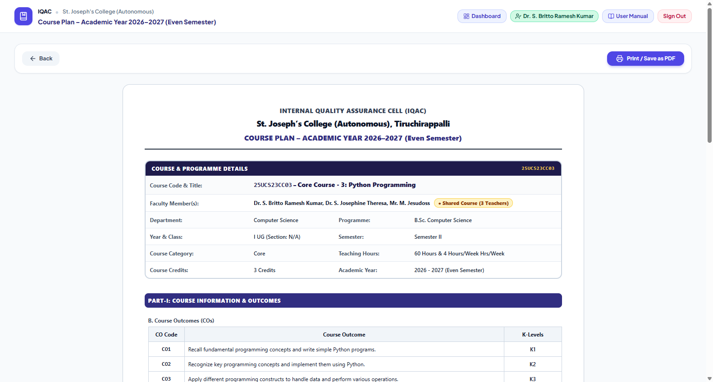
Figure 7.1: Official IQAC Course Plan document formatted for A4 printing and PDF export with multi-faculty headers and signatures.
Print Layout Features:
- Clean Institutional Layout: All instructional helper boxes and form controls are cleanly omitted, presenting only the finalized academic curriculum.
- Comprehensive Course Header: Displays Course Code, Title, Class, Section, Credits, Weekly Hours, Handling Faculty, and all Co-Faculty.
- Multi-Faculty Sign-Off: Renders individual digital signature lines for each handling instructor alongside the HOD sign-off block.
- PDF Archiving: In the print preview, click Print Document and choose "Save as PDF" as your destination printer.
8 Teaching-Learning Practices, Assessment & E-Content Form (Step 2)
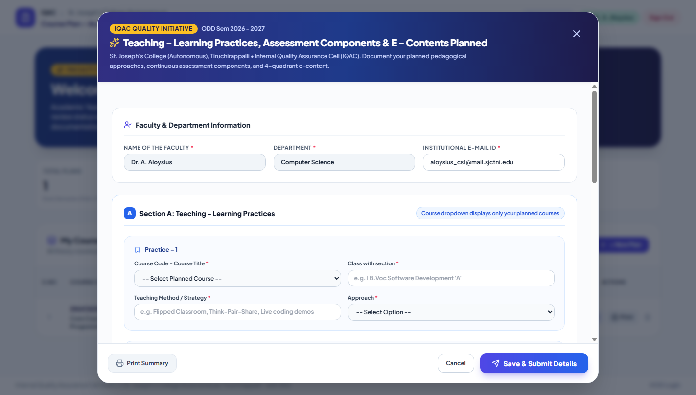
Figure 8.1: Dedicated institutional reporting modal for Teaching-Learning Practices, CIA, and E-Content.
1. Complete this form for each of your assigned courses after preparing your Course Plan (Step 1).
2. Select the Course Code and Title from your assigned courses list.
3. Enter Part A: Innovative Teaching–Learning Practices (Methodology, ICT tool, JosTEL link, Outcome).
4. Enter Part B: Innovative CIA Assessment Strategies (Group discussion, seminar, role play, rubric).
5. Enter Part C: E-Content & JosTEL Development (Video lectures, modules, interactive quizzes).
6. Click Save & Submit Details to transmit to the institutional IQAC database.
9 Head of Department (HOD) & Leadership Control Room
Unified HOD & College Leadership Access
Heads of all 32 Academic Departments and members of the Standing Committee of the Governing Body (Rector, Secretary, Principal) access the monitoring workspace directly through the standard faculty sign-in.
Simply click the purple 🏛️ View Department Status (HOD Dashboard) button located on your Faculty Dashboard. To return to your personal teaching course plans, simply click ← Back to My Faculty Dashboard.
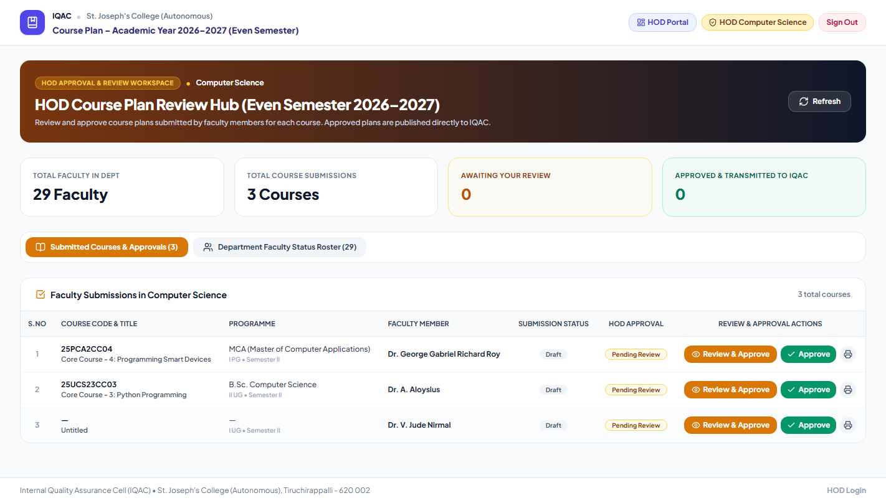
Figure 9.1: Department Course Plan Control Room with real-time submission metrics and action controls.
HOD Review & Approval Actions:
Click to open the full interactive viewer. Inspect the lecture schedule, textbooks, outcomes, and assessment plan.
Digitally verifies the course plan. Immediately updates status to Approved and publishes to the IQAC college repository.
Allows providing specific revision notes to the faculty member. Unlocks the plan for editing on their dashboard.
10 General English & General Tamil Cross-Department Guide
Instructions for Department of English and Department of Tamil Faculty:
General Tamil (Part I - GL) and General English (Part II - GE) are taken by all undergraduate students across all 24 UG degree programmes in Semesters II & IV.
- Sign in under your home department (English or Tamil).
- Click + Create New Course Plan.
- In Programme, select the target student programme you teach (e.g., B.Sc. Computer Science, B.Com. Commerce, B.Voc. SD & SA, B.Sc. Mathematics).
- In Year and Class, choose I UG (Semester II) or II UG (Semester IV).
- In Select Course:
- Semester II (I UG): English faculty choose
25UEN22GE02A/B; Tamil faculty choose25UTA21GL02. - Semester IV (II UG): English faculty choose
GE04B(Science),GE04C(Commerce), orGE04A(Arts); Tamil faculty chooseGL04B(Scientific Tamil),GL04C(Business Tamil), orGL04A(Media Tamil).
- Semester II (I UG): English faculty choose
11 Frequently Asked Questions (FAQ) & Troubleshooting
Once submitted, the course plan is locked from editing to maintain audit trail consistency during HOD review. If you need to make changes, request your HOD to click "↩ Return with Feedback", which will immediately re-enable editing on your dashboard.
The primary faculty member creates the course plan, selects "Shared with Other Faculty (Collaborative)", and adds the co-faculty member(s). In Part-II (Unit Completion Plan), specify which faculty member handles which unit (I through V). In Part-III (CIA Assessments), allocate assessment responsibilities accordingly. Both teachers' names appear on the final approved document.
Planned Hours in Section B (Unit Completion Plan) are automatically calculated from the sum of hours allocated in Section A (Detailed Teaching Plan). To change the unit hours, update the lecture hours in the Detailed Teaching Plan rows for that unit.
Open your course plan and click Print Preview (or click the print icon from your dashboard). In the preview modal, click Print Document. In your browser's print dialog, set the Destination to "Save as PDF" and click Save.